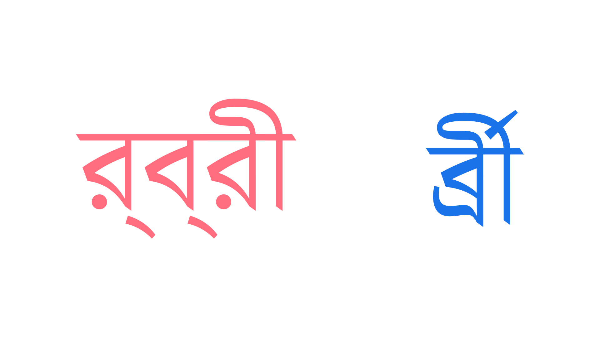

Shaping
By Google Fonts Knowledge contributors · Google Fonts Knowledge.
Original article · Source on GitHub · CC BY-SA 4.0. Text, illustrations and existing credits reproduced from the licensed Knowledge repository. Open Shelf adapted the layout and links; these adaptations are also CC BY-SA 4.0. No endorsement implied.
Shaping refers to the automatic process of combining plain text with a font, according to rules supplied by the shaping engine and the font itself.
When converting typed characters into readable text, there are two main operations that occur in any typesetting software, from the humble word processor to advanced print design apps: assigning the characters the correct glyphs (substitution), and moving them into the correct locations on the line (positioning).
For Latin, this is often an almost subliminal finessing of type, such as substituting the f and i characters into the single fi ligature glyph, or applying kerning rules to shift the position of a glyph closer to the one preceding it. If no ligatures or kerns in the font are processed by a shaping engine, the text will remain legible, although less readable.
But for many other scripts, these processes are essential. In Adobe apps, switching on the World Ready Paragraph Composer should handle everything automatically, but when turned off—i.e., left at a Latin-centric default—the consequences are more serious:

The Bengali syllable ‘RBRii’ shaped incorrectly on the left, without the World Ready Paragraph Composer turned on, and formed correctly on the right by character sequence Ra + Hoshonto (Virama) + Ba + Hoshonto + Ra + Dirgho I (long i vowel).
On the notarabic.com blog, designer Ramsey Nasser compiles many examples of Arabic text being used in real products, packaging, and publications without correct (or even any) shaping being applied. This is typically because the designer is not fluent in the language and typesetting software is very often Latin-centric, meaning that mistakes in the shaping get overlooked.